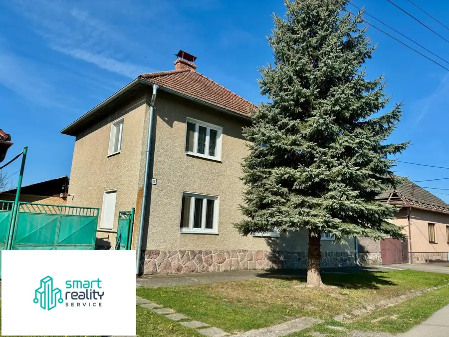
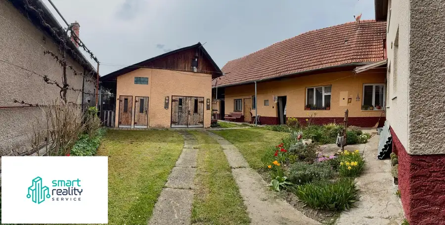
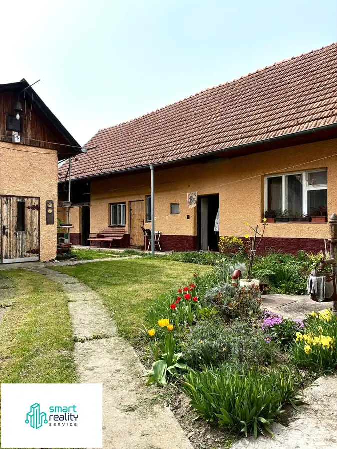
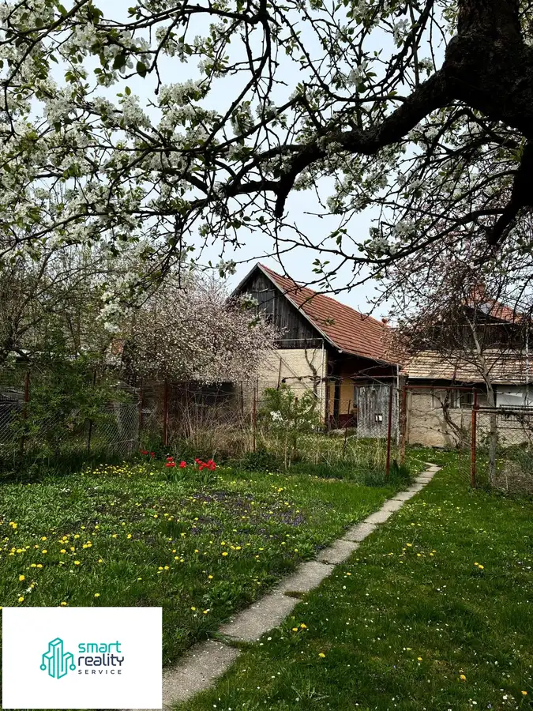
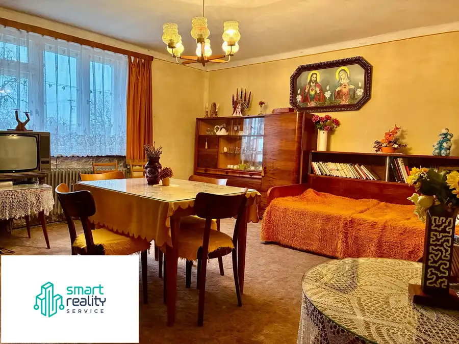
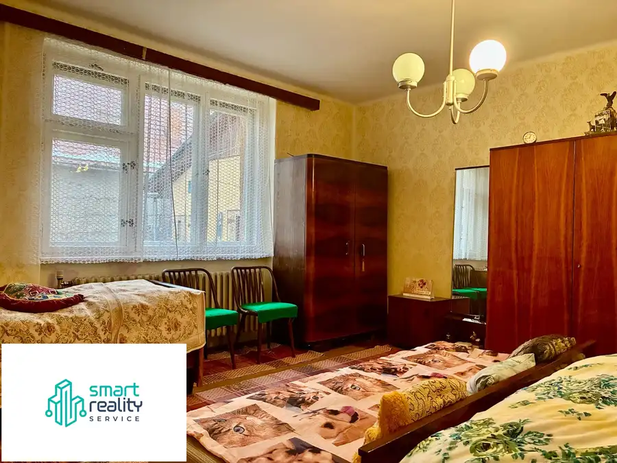
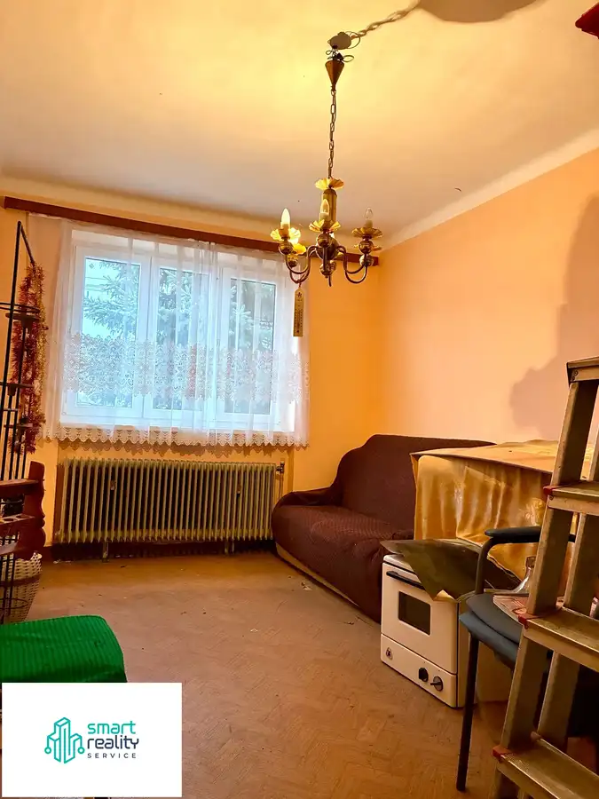

Dvojpodlažný rodinný dom Lovča
Lovča







- Plocha355 m²
- StavPôvodný stav
- VlastníctvoOsobné
O nehnuteľnosti
NA PREDAJ: Priestranný 6-izbový rodinný dom s bohatým rodinným zázemím a záhradou – LovčaHľadáte pre svoju rodinu bezpečné, tiché bývanie v tesnej blízkosti mesta, kde nájdete dostatok priestoru na život, sebestačnosť a dokonalý relax? Realitná kancelária Smart Reality Service vám exkluzívne ponúka na predaj masívny, udržiavaný dvojpodlažný rodinný dom v obci Lovča, len 5 minút autom od Žiaru nad Hronom.Tento čiastočne podpivničený dom z roku 1973 predstavuje ideálny základ pre vytvorenie vysnívaného domova pre veľkú rodinu, prípadne pohodlné dvojgeneráčné bývanie s úplným súkromím.VLASTNÉ GAZDODAVSTVO A RELAX POD JEDNÝM SLNKOM:Pozemok je rovinatý, posktne vám maximálny úžitok a slobodu:Bohatá záhrada (503 m²): Starostlivo udržiavaná plocha s dospelými ovocnými stromami a kríkmi, ktoré vám okamžite prinesú vlastnú úrodu.Pripravený skleník: Ideálne miesto pre nadšencov domáceho pestovania čerstvej zeleniny.Praktická garáž a hospodárske budovy: Bezpečné parkovanie pre vaše auto v garáži a rozsiahle hospodárske budovy / dreváreň, ktoré poslúžia ako dokonalé úložné zázemie na bicykle, záhradnú techniku či sezónne veci.TECHNICKÉ BENEFITY A ENERGETICKÝ BONUS:Dom je vo veľmi zachovalom, suchom a čistom stave, s osadenými plastovými oknami.Slnečné kolektory: Nehnuteľnosť disponuje staršími, no plne funkčnými slnečnými kolektormi, ktoré efektívne pomáhajú s ohrevom vody a znižujú mesačné náklady na prevádzku domácnosti.Čiastočné podpivničenie: Suterén domu ukrýva technické zázemie, kotolňu a úložné priestory.DISPOZÍCIA PRE SPOKOJNÝ ŽIVOT:Prízemie: Vstupná chodba, kuchyňa, 4 izby, špajza, kúpeľňa s WC.Poschodie: 2 samostatné izby, chodba (ideálna nočná zóna pre deti, hosťovská izba alebo priestor pre home-office).DOKONALÁ LOKALITA PRE MLADÚ RODINU: Lovča spája pokojný vidiecky charakter s vynikajúcou dostupnosťou:V obci sa nachádza materská škola a základná škola (1. – 4. ročník) – vaše deti tak majú vzdelanie doslova na pár krokov od domu bez nutnosti ranného dochádzania.Miestny obchod s potravinami v pešej dostupnosti.Kompletná mestská infraštruktúra Žiaru nad Hronom je vzdialená len 5 minút cesty autom.CENA: 149 900 € (V cene je zahrnutý kompletný právny servis.) PRI VÁŽNOM ZÁUJME DOHODA NA CENE MOŽNÁ. Cena na znaleckom posudku - 161 000€Naša skúsená hypošpecialistka vám pomôže s preverením možností financovania a výberom najvhodnejšej banky pre hladký priebeh obchodu.Kontakt pre obhliadky: Marta Hrmová – 0905 470 614marta@smartrealityservice.skwww.smartrealityservice.sk
Parametre
- Druh
- Rodinný dom
- Dátum zverejnenia
- 25. 11. 2025
- Energetická náročnosť
- Z klasických materiálov
- Energetický certifikát budovy
- nie je
- Orientácia
- Juhozápadná
- Plocha pozemku
- 1127 m²
- Počet garáží
- 1
- Počet izieb / miestností
- 6
- Rok kolaudácie
- 1973
- Rok výstavby
- 1973
- Stav nehnuteľnosti
- Pôvodný stav
- Terén pozemku
- Rovinatý
- Typ
- Predaj
- Typ konštrukcie
- Zmiešaná
- Vlastníctvo
- Osobné
- Vybavenie
- Garáž, Pivnica, Špajza, Technická miestnosť
- Vykurovanie
- Lokálne
- Zastavaná plocha
- 624 m²
- Úžitková plocha
- 355 m²